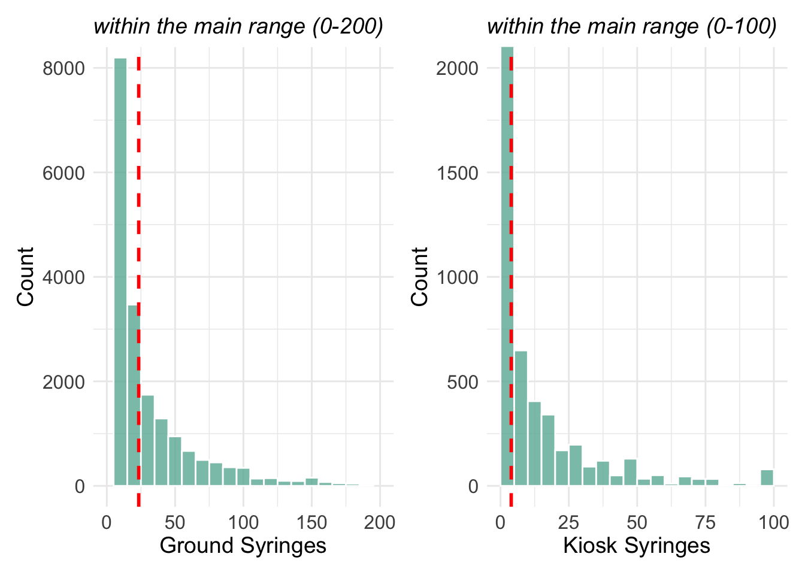
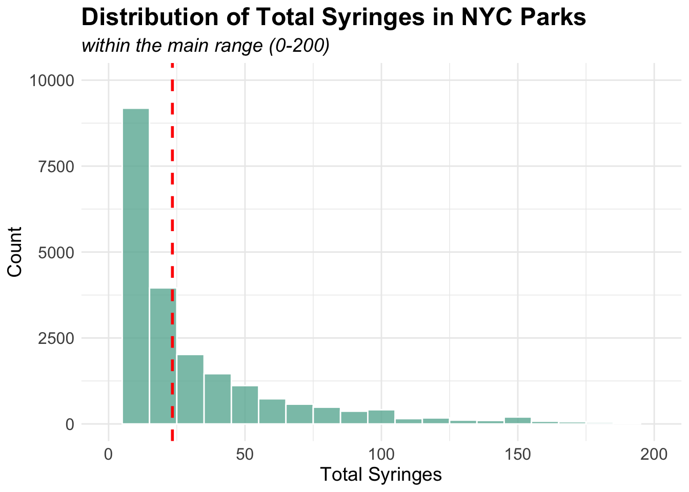
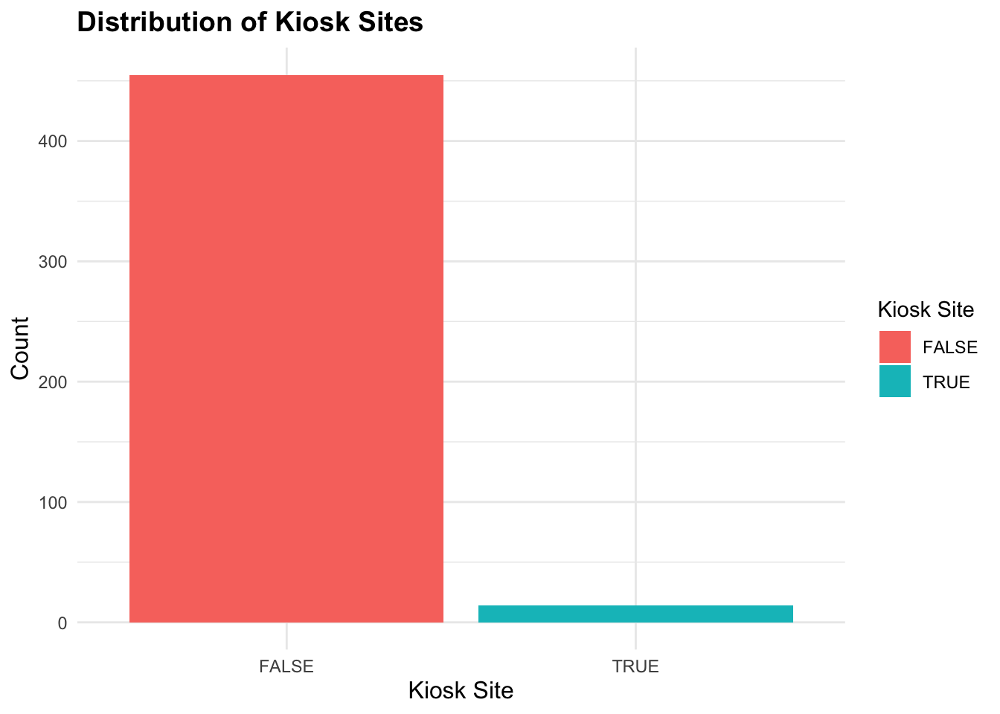
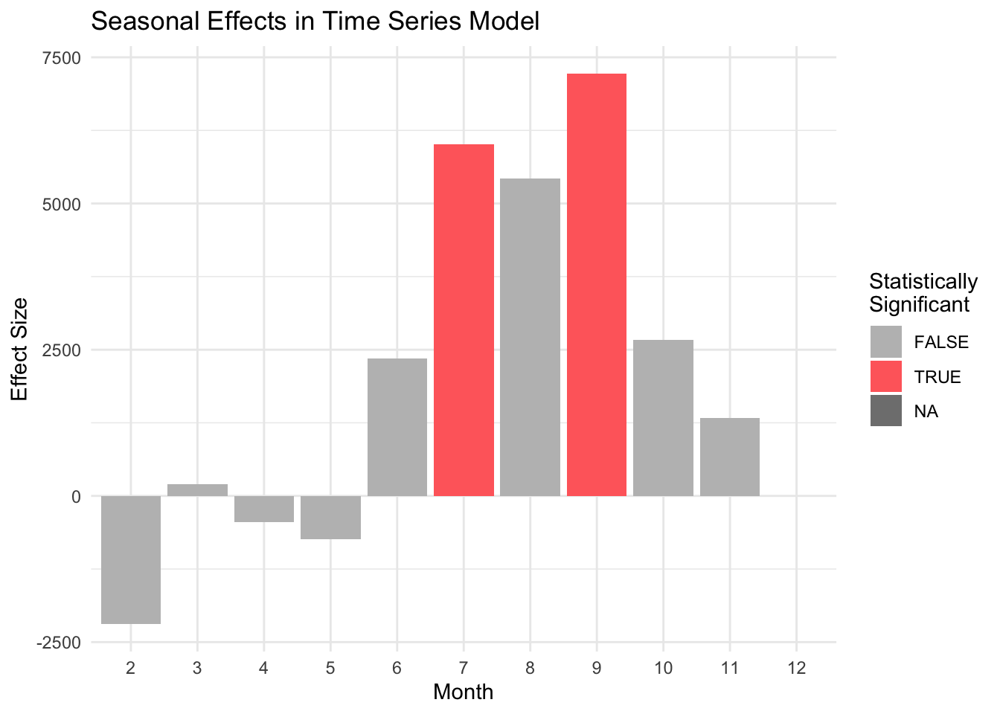
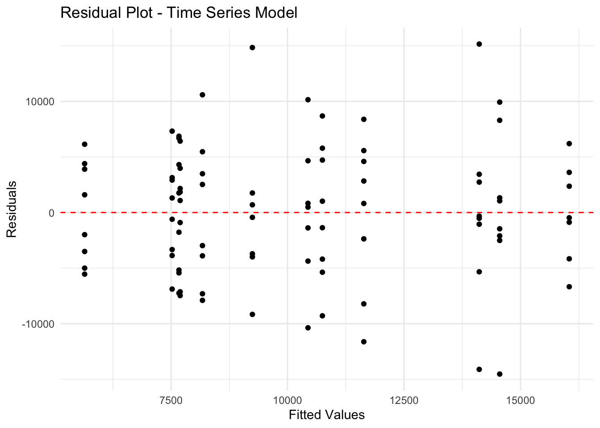
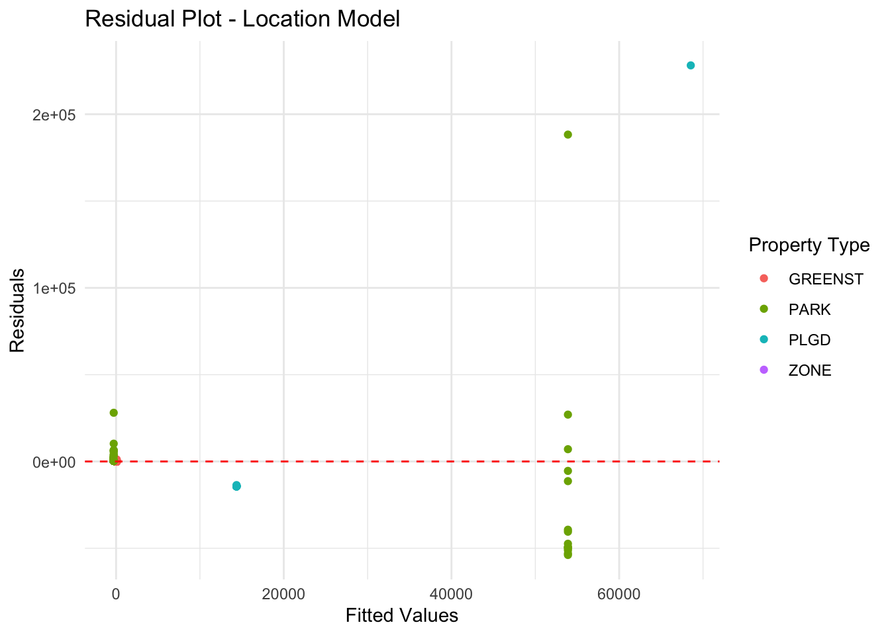

Main questions we want to answer with this dataset
- How does syringe litter differ between parks?
- How does utilization of safe disposal kiosks change over time?
- How does utilization of safe disposal kiosks compare with syringe litter?
The critical issue of syringe litter in New York City parks was vividly highlighted in a recent YouTube video“Used syringes, needles litter one of the Bronx’s largest parks”, which documented the disturbing presence of discarded needles in one of the borough’s major recreational spaces. This visual evidence of the problem resonated with growing community concerns about public safety and health risks in urban parks, particularly in areas where children and families gather. While this coverage brought public attention to the issue, there remains a critical need for systematic, data-driven analysis of syringe litter patterns across NYC parks to inform evidence-based interventions and policy decisions.
This dataset contains records of syringe collection in New York City’s Parks, gathered jointly by NYC Parks staff and partner organizations including Washington Heights Corner Project and New York Harm Reduction Educators. The dataset is part of NYC Parks Syringe Litter Data Collection initiative and is publicly accessible through the NYC OpenData (Map data), demonstrating the city’s commitment to transparency in public health and safety data. Daily collection data is compiled and published monthly after thorough quality control processes, making it a reliable source for analyzing syringe disposal patterns in NYC Parks.

syringe_df <- read_csv("nycparks_syringe/Summary_of_Syringe_Data_in_NYC_Parks_20241125.csv") %>%
mutate(
collected_date = mdy_hms(collected_date),
year = year(collected_date),
month_text = factor(month_text, levels = month.abb),
ground_syringes = ifelse(is.na(ground_syringes), 0, ground_syringes),
kiosk_syringes = ifelse(is.na(kiosk_syringes), 0, kiosk_syringes),
total_syringes = ifelse(is.na(total_syringes), 0, total_syringes),
kiosk_number = ifelse(is.na(kiosk_number), 0, kiosk_number )) %>%
distinct() %>%
filter(location != "0") %>%
select(-c(response_id, gispropnum, omppropid, created_date, precinct, source, kiosk_type, collected_date, time_of_day, group, district, week)) %>%
relocate(location, everything())## Rows: 35155 Columns: 23
## ── Column specification ───────────────────────────────────────────────────────────────────────────────────────────────────────────────
## Delimiter: ","
## chr (13): response_id, gispropnum, omppropid, collected_date, time_of_day, month_text, group, location, kiosk_type, borough, distr...
## dbl (8): year, month, week, ground_syringes, kiosk_syringes, total_syringes, kiosk_number, precinct
## lgl (1): kiosk_site
## dttm (1): created_date
##
## ℹ Use `spec()` to retrieve the full column specification for this data.
## ℹ Specify the column types or set `show_col_types = FALSE` to quiet this message.The dataset on syringe findings in NYC parks was processed through several key cleaning steps. First, we standardized the date-time information by converting the collected_date field to a consistent format and extracting the year component. We also standardized the month names using the abbreviated format. Missing values in syringe counts (ground_syringes, kiosk_syringes, total_syringes) and kiosk numbers were replaced with zeros to ensure consistent numerical analysis. Duplicate entries were removed using distinct(), and records with invalid location values (where location = “0”) were filtered out. Finally, we streamlined the dataset by removing non-essential administrative fields such as response_id, property numbers, precinct information, and collection details, resulting in a more focused dataset for analysis.
The variable we kept in the dataset are:
- location: The name of the park where syringes were
collected.
- borough: Borough in which syringe collection took
place.
- property_type: Describes the location of syringe
collection as park, zone, or playground.
- kiosk_site: Marks the location where syringes were
collected as a site with a kiosk or not.
- kiosk_number: The identification number assigned to a
kiosk.
- ground_syringes: The number of syringes collected off the
ground.
- kiosk_syringes: The number of syringes collected from
kiosks.
- total_syringes: The total number of syringes
collected.
- year: The year syringes were collected.
- month: The month syringes were collected: The month
syringes were collected.
- month_text: The month syringes were collected in text
format.
location_trends <- syringe_df %>%
group_by(location, year) %>%
summarise(
annual_total = sum(total_syringes)
) %>%
arrange(location, year) %>%
group_by(location) %>%
mutate(
year_change = annual_total - lag(annual_total),
pct_change = (year_change / lag(annual_total)) * 100
) %>%
filter(!is.na(year_change)) %>%
summarise(
avg_annual_change = mean(year_change, na.rm = TRUE),
total_change = sum(year_change, na.rm = TRUE)
) %>%
arrange(desc(avg_annual_change))## `summarise()` has grouped output by 'location'. You can override using the `.groups` argument.p10 <- ggplot(head(location_trends, 10),
aes(x = reorder(location, avg_annual_change),
y = avg_annual_change)) +
geom_bar(stat = "identity", fill = "#69b3a2") +
coord_flip() +
theme_minimal() +
labs(title = "Top 10 Locations by Average Annual Increase in Syringes",
x = "Location",
y = "Average Annual Change") +
theme(
plot.title = element_text(size = 12),
axis.text = element_text(size = 10)
)
ggplotly(p10)Among the top 10 locations with the highest average annual increase in syringe findings, Aqueduct Walk and St. Mary’s Park show significantly higher rates of increase, with approximately 4,000 and 3,500 additional syringes per year respectively. St. James Park ranks third with about 2,000 annual increases, while the remaining locations, including Washington Square Park and Poe Park, show more moderate increases of less than 1,000 syringes per year.
Let’s see the summary statistics of syringe count columns
syringe_df %>%
select(c(6:8)) %>%
tbl_summary()| Characteristic | N = 34,8671 |
|---|---|
| kiosk_syringes | 0.0 (0.0, 0.0) |
| total_syringes | 10 (3, 26) |
| kiosk_number | 0 (0, 0) |
| 1 Median (Q1, Q3) | |
The summary statistics reveal that among 34,867 syringe-related records, the median total syringes found was 10 (IQR: 3-26), while kiosk usage metrics consistently showed zero values, suggesting limited utilization of safe disposal facilities.
p1 = ggplot(syringe_df, aes(x = ground_syringes)) +
geom_histogram(binwidth = 10, fill = "#69b3a2", color = "white", alpha = 0.8) +
xlim(0, 200) +
coord_cartesian(ylim = c(0, 8000)) +
geom_vline(aes(xintercept = mean(ground_syringes, na.rm = TRUE)),
color = "red", linetype = "dashed", size = 1) +
labs(
subtitle = "within the main range (0-200)",
x = "Ground Syringes",
y = "Count"
) +
theme_minimal() +
theme(
plot.title = element_text(size = 18, face = "bold"),
plot.subtitle = element_text(size = 14, face = "italic"),
axis.title = element_text(size = 14),
axis.text = element_text(size = 12)
)
p2 = ggplot(syringe_df, aes(x = kiosk_syringes)) +
geom_histogram(binwidth = 5, boundary = 0, fill = "#69b3a2", color = "white", alpha = 0.8) +
xlim(0, 100) +
coord_cartesian(ylim = c(0, 2000)) +
geom_vline(aes(xintercept = mean(kiosk_syringes, na.rm = TRUE)),
color = "red", linetype = "dashed", size = 1) +
labs(
subtitle = "within the main range (0-100)",
x = "Kiosk Syringes",
y = "Count"
) +
theme_minimal() +
theme(
plot.title = element_text(size = 18, face = "bold"),
plot.subtitle = element_text(size = 14, face = "italic"),
axis.title = element_text(size = 14),
axis.text = element_text(size = 12)
)
p1 + p2## Warning: Removed 440 rows containing non-finite outside the scale range (`stat_bin()`).## Warning: Removed 2 rows containing missing values or values outside the scale range (`geom_bar()`).## Warning: Removed 268 rows containing non-finite outside the scale range (`stat_bin()`). The distribution of syringe findings shows markedly different patterns between ground and kiosk collections. Ground syringes show a highly right-skewed distribution with most counts falling between 0-50 and a median around 10 (indicated by the red dashed line). In contrast, kiosk syringes demonstrate a more concentrated distribution within the 0-25 range, with notably fewer occurrences overall and a median near zero, suggesting limited utilization of disposal facilities.
ggplot(syringe_df, aes(x = total_syringes)) +
geom_histogram(binwidth = 10, fill = "#69b3a2", color = "white", alpha = 0.8) +
xlim(0, 200) +
coord_cartesian(ylim = c(0, 10000)) +
geom_vline(aes(xintercept = mean(ground_syringes, na.rm = TRUE)),
color = "red", linetype = "dashed", size = 1) +
labs(
title = "Distribution of Total Syringes in NYC Parks",
subtitle = "within the main range (0-200)",
x = "Total Syringes",
y = "Count"
) +
theme_minimal() +
theme(
plot.title = element_text(size = 18, face = "bold"),
plot.subtitle = element_text(size = 14, face = "italic"),
axis.title = element_text(size = 14),
axis.text = element_text(size = 12)
)## Warning: Removed 553 rows containing non-finite outside the scale range (`stat_bin()`).## Warning: Removed 2 rows containing missing values or values outside the scale range (`geom_bar()`). The total syringes distribution shows a similar pattern to ground syringes, with a right-skewed distribution and a median around 10.
location_count <- syringe_df %>%
distinct(location) %>%
nrow()
print(paste("Total number of unique parks:", location_count))## [1] "Total number of unique parks: 477"We identified 477 unique parks in this dataset, indicating a broad representation of NYC’s park system in the syringe collection records.
park_syringe =
syringe_df %>%
filter(!is.na(kiosk_site)) %>%
distinct(location, .keep_all = TRUE)
ggplot(park_syringe, aes(x = factor(kiosk_site), fill = factor(kiosk_site))) +
geom_bar() +
theme_minimal() +
labs(title = "Distribution of Kiosk Sites",
x = "Kiosk Site",
y = "Count") +
scale_fill_discrete(name = "Kiosk Site") +
theme(
plot.title = element_text(size = 14, face = "bold"),
axis.title = element_text(size = 12)
) Due to the limited utilization of kiosk sites, the distribution of kiosk and non-kiosk locations is highly imbalanced, with a vast majority of syringe collection sites lacking kiosk facilities.
So we want to see the distribution of syringe kiosks, here is the map of syringe kiosks in NYC parks.
syringe_map = read_csv("nycparks_syringe/Parks_Syringe_Disposal_Kiosks_20241202.csv")## Rows: 57 Columns: 17
## ── Column specification ───────────────────────────────────────────────────────────────────────────────────────────────────────────────
## Delimiter: ","
## chr (13): Borough, ParkDistrict, GISPropNum, OMPPropID, PropertyName, SubPropertyName, Location, KioskType, Submodel, ContainerSiz...
## dbl (1): KioskID
## lgl (2): Remove Date, Status Change Date
## dttm (1): InstallationDate
##
## ℹ Use `spec()` to retrieve the full column specification for this data.
## ℹ Specify the column types or set `show_col_types = FALSE` to quiet this message.process_data <- function(syringe_map) {
# Extract coordinates from POINT column
syringe_map$POINT_lng <- as.numeric(gsub(".*\\((.*) .*\\)", "\\1", syringe_map$Point))
syringe_map$POINT_lat <- as.numeric(gsub(".*\\(.* (.*)\\)", "\\1", syringe_map$Point))
return(syringe_map)
}
syringe_map <- process_data(syringe_map)
map <- leaflet(syringe_map) %>%
addTiles() %>%
setView(lng = -73.91, lat = 40.83, zoom = 12) %>%
addCircleMarkers(
lng = ~POINT_lng,
lat = ~POINT_lat,
radius = 8,
color = ~case_when(
KioskType == "Indoor Wall Mount" ~ "blue",
KioskType == "Outdoor Post Mount" ~ "green",
KioskType == "Outdoor Wall Mount" ~ "red",
TRUE ~ "gray"
),
fillOpacity = 0.7,
stroke = FALSE,
popup = ~paste(
"<b>Location:</b>", Location, "<br>",
"<b>Park:</b>", PropertyName, "<br>",
"<b>Type:</b>", KioskType, "<br>",
"<b>Status:</b>", Status, "<br>",
"<b>Container Size:</b>", ContainerSize
)
) %>%
addLegend(
position = "bottomright",
colors = c("blue", "green", "red"),
labels = c("Indoor Wall Mount", "Outdoor Post Mount", "Outdoor Wall Mount"),
title = "Kiosk Types",
opacity = 0.7
) %>%
addSearchOSM() %>%
addMeasure()
mapThe map provides a visual representation of syringe kiosk locations in NYC parks, with distinct markers indicating different kiosk types and statuses. The interactive features allow users to explore individual kiosk details and container sizes, providing valuable insights into the distribution and accessibility of safe disposal facilities across the city.
Next, we will explore the temporal trends in syringe findings and kiosk utilization rates to identify patterns and potential correlations between these metrics.
yearly_monthly_trends <- syringe_df %>%
group_by(year, month) %>%
summarise(total_syringes = sum(total_syringes)) %>%
ungroup()## `summarise()` has grouped output by 'year'. You can override using the `.groups` argument.p3 <- ggplot(yearly_monthly_trends, aes(x = factor(month), y = total_syringes,
group = 1,
text = paste("Year:", year,
"<br>Month:", month,
"<br>Syringes:", total_syringes))) +
geom_line() +
geom_point() +
facet_wrap(~year, scales = "free_y", ncol = 2) +
theme_minimal() +
labs(title = "Monthly Syringe Findings Trends (2017-2024)",
x = "Month",
y = "Number of Syringes Found") +
theme(
plot.title = element_text(size = 14, face = "bold"),
axis.text.x = element_text(angle = 45, hjust = 1),
strip.text = element_text(size = 12, face = "bold")
) +
scale_x_discrete(labels = month.abb)
interactive_faceted <- ggplotly(p3, tooltip = "text")
p4 <- ggplot(yearly_monthly_trends,
aes(x = factor(month),
y = total_syringes,
color = factor(year),
group = year,
text = paste("Year:", year,
"<br>Month:", month,
"<br>Syringes:", total_syringes))) +
geom_line(size = 1) +
geom_point() +
theme_minimal() +
labs(title = "Combined Monthly Syringe Findings Trends (2017-2024)",
x = "Month",
y = "Number of Syringes Found",
color = "Year") +
theme(
plot.title = element_text(size = 14, face = "bold"),
axis.text.x = element_text(angle = 45, hjust = 1),
legend.position = "right"
) +
scale_x_discrete(labels = month.abb)
combined_plot <- ggplotly(p4, tooltip = "text")
interactive_facetedcombined_plotyearly_monthly_trends %>%
group_by(year) %>%
summarise(
total_syringes = sum(total_syringes),
avg_monthly = mean(total_syringes),
max_monthly = max(total_syringes),
min_monthly = min(total_syringes)
) %>%
knitr::kable()| year | total_syringes | avg_monthly | max_monthly | min_monthly |
|---|---|---|---|---|
| 2017 | 3312 | 3312 | 3312 | 3312 |
| 2018 | 92069 | 92069 | 92069 | 92069 |
| 2019 | 93627 | 93627 | 93627 | 93627 |
| 2020 | 112709 | 112709 | 112709 | 112709 |
| 2021 | 182808 | 182808 | 182808 | 182808 |
| 2022 | 193112 | 193112 | 193112 | 193112 |
| 2023 | 144514 | 144514 | 144514 | 144514 |
| 2024 | 130025 | 130025 | 130025 | 130025 |
monthly_trend <- syringe_df %>%
group_by(month, month_text) %>%
summarise(
total_syringes = sum(total_syringes)
)## `summarise()` has grouped output by 'month'. You can override using the `.groups` argument.all_monthly <- ggplot(monthly_trend, aes(x = month_text, y = total_syringes, group = 1)) +
geom_line(color = "#69b3a2") +
geom_point(color = "red") +
theme_minimal() +
labs(title = "Monthly syringe discovery trends",
x = "Month",
y = "syringe count") +
theme(axis.text.x = element_text(angle = 45, hjust = 1)) # Rotate x-axis labels
ggplotly(all_monthly)The monthly syringe findings from 2017 to 2024 reveal a clear increasing trend over the years, with 2022 showing the highest peak of nearly 30,000 syringes in July. The data demonstrates consistent seasonal patterns, with higher counts typically occurring during summer months (June-September) and lower counts in winter months. Recent years (2021-2024) show notably higher syringe counts compared to earlier years (2017-2019), suggesting an intensifying challenge in urban park maintenance and public health management.
borough_summary <- syringe_df %>%
group_by(borough) %>%
summarise(
unique_locations = n_distinct(location),
total_syringes = sum(total_syringes),
avg_syringes_per_location = total_syringes/unique_locations
)
p5 <- ggplot(borough_summary,
aes(x = reorder(borough, unique_locations),
y = unique_locations,
text = paste("Borough:", borough,
"<br>Unique Locations:", unique_locations,
"<br>Total Syringes:", total_syringes,
"<br>Avg per Location:", round(avg_syringes_per_location, 2)))) +
geom_bar(stat = "identity", fill = "darkgreen") +
theme_minimal() +
labs(title = "Number of Unique Locations by Borough",
x = "Borough",
y = "Number of Unique Locations")
ggplotly(p5, tooltip = "text")The distribution of unique locations with syringe findings varies substantially across NYC boroughs. The Bronx leads with over 200 unique locations, followed by Manhattan with approximately 160 locations. Brooklyn shows a moderate number with about 45 locations, while Queens and Staten Island report significantly fewer sites, with around 25 and 15 locations respectively. This geographic pattern suggests a concentration of syringe-related issues in the northern boroughs of the city.
property_summary <- syringe_df %>%
group_by(property_type) %>%
summarise(
unique_locations = n_distinct(location),
total_syringes = sum(total_syringes),
avg_syringes_per_location = total_syringes/unique_locations
)
p6 <- ggplot(property_summary,
aes(x = reorder(property_type, unique_locations),
y = unique_locations,
text = paste("Property Type:", property_type,
"<br>Unique Locations:", unique_locations,
"<br>Total Syringes:", total_syringes,
"<br>Avg per Location:", round(avg_syringes_per_location, 2)))) +
geom_bar(stat = "identity", fill = "lightgreen") +
theme_minimal() +
coord_flip() +
labs(title = "Number of Unique Locations by Property Type",
x = "Property Type",
y = "Number of Unique Locations")
ggplotly(p6, tooltip = "text")monthly_kiosk_trend <- syringe_df %>%
group_by(year, month) %>%
summarise(
total_locations = n_distinct(location),
kiosk_locations = n_distinct(location[kiosk_site == TRUE]),
total_syringes = sum(total_syringes),
kiosk_utilization_rate = kiosk_locations / total_locations
) %>%
mutate(date = as.Date(paste(year, month, "01", sep = "-")))## `summarise()` has grouped output by 'year'. You can override using the `.groups` argument.p7 <- ggplot(monthly_kiosk_trend,
aes(x = date,
y = kiosk_utilization_rate,
group = 1,
text = paste("Date:", format(date, "%Y-%m"),
"<br>Utilization Rate:", round(kiosk_utilization_rate * 100, 2), "%",
"<br>Kiosk Locations:", kiosk_locations,
"<br>Total Locations:", total_locations))) +
geom_point() +
geom_line(color = "blue") +
theme_minimal() +
labs(title = "Kiosk Utilization Rate Over Time",
x = "Date",
y = "Utilization Rate") +
scale_y_continuous(labels = scales::percent)
ggplotly(p7, tooltip = "text")monthly_comparison <- syringe_df %>%
group_by(year, month) %>%
summarise(
total_locations = n_distinct(location),
kiosk_locations = n_distinct(location[kiosk_site == TRUE]),
total_syringes = sum(total_syringes),
ground_syringes = sum(ground_syringes),
kiosk_syringes = sum(kiosk_syringes)
) %>%
mutate(
date = as.Date(paste(year, month, "01", sep = "-")),
kiosk_rate = kiosk_locations / total_locations
) %>%
arrange(date)## `summarise()` has grouped output by 'year'. You can override using the `.groups` argument.p8 <- plot_ly() %>%
add_trace(
data = monthly_comparison,
x = ~date,
y = ~ground_syringes,
name = "Ground Syringes",
type = "scatter",
mode = "lines+markers",
line = list(color = "pink")
) %>%
add_trace(
data = monthly_comparison,
x = ~date,
y = ~kiosk_syringes,
name = "Kiosk Syringes",
type = "scatter",
mode = "lines+markers",
line = list(color = "green")
) %>%
layout(
title = "Ground vs Kiosk Syringes Over Time",
xaxis = list(title = "Date"),
yaxis = list(title = "Number of Syringes"),
hovermode = "x unified"
)
p8location_comparison <- syringe_df %>%
group_by(location) %>%
summarise(
has_kiosk = any(kiosk_site == TRUE, na.rm = TRUE),
total_syringes = sum(total_syringes),
ground_syringes = sum(ground_syringes),
kiosk_syringes = sum(kiosk_syringes),
avg_syringes_per_report = mean(total_syringes)
)
p9 <- ggplot(location_comparison,
aes(x = factor(has_kiosk,
labels = c("No Kiosk", "Has Kiosk")),
y = total_syringes,
fill = factor(has_kiosk))) +
geom_boxplot(alpha = 0.7,
outlier.shape = 21,
outlier.color = "black",
outlier.fill = "white",
outlier.size = 3) +
theme_minimal() +
labs(title = "Syringe Distribution by Kiosk Presence",
subtitle = "Comparison of total syringes found at locations with and without kiosks",
x = "",
y = "Total Syringes Found") +
scale_fill_manual(values = c("#FF9999", "#99CC99")) +
theme(
plot.title = element_text(size = 16, face = "bold", margin = margin(b = 10)),
plot.subtitle = element_text(size = 12, color = "grey40", margin = margin(b = 20)),
axis.title.y = element_text(size = 12, margin = margin(r = 10)),
axis.text = element_text(size = 11),
legend.position = "none",
panel.grid.major.x = element_blank(),
panel.grid.minor = element_blank(),
panel.border = element_rect(color = "grey90", fill = NA)
) +
scale_y_continuous(labels = scales::comma)
ggplotly(p9, tooltip = c("y", "x")) %>%
layout(hoverlabel = list(bgcolor = "white"))# 1. Time Series Model
monthly_data <- syringe_df %>%
group_by(year, month) %>%
summarise(
total_syringes = sum(total_syringes),
ground_syringes = sum(ground_syringes),
kiosk_syringes = sum(kiosk_syringes)
) %>%
mutate(
date = as.Date(paste(year, month, "01", sep = "-")),
month_number = as.numeric(month)
) %>%
ungroup()## `summarise()` has grouped output by 'year'. You can override using the `.groups` argument.# Fit time series model
time_model <- lm(total_syringes ~ month_number + factor(month), data = monthly_data)
monthly_data$predicted <- predict(time_model, monthly_data)# 2. Location-based Model with unique locations
unique_locations <- syringe_df %>%
distinct(location, .keep_all = TRUE) %>%
select(location, property_type, kiosk_site)
location_totals <- syringe_df %>%
group_by(location) %>%
summarise(
total_syringes = sum(total_syringes),
has_kiosk = any(kiosk_site == TRUE, na.rm = TRUE)
) %>%
ungroup()
location_model_data <- unique_locations %>%
left_join(location_totals, by = "location") %>%
na.omit()
# Fit location model
location_model <- lm(total_syringes ~ property_type + has_kiosk,
data = location_model_data)
location_model_data$predicted <- predict(location_model, location_model_data)p11 <- ggplot(monthly_data) +
geom_line(aes(x = date, y = total_syringes, color = "Actual"), size = 1) +
geom_line(aes(x = date, y = predicted, color = "Predicted"), size = 1) +
theme_minimal() +
labs(title = "Actual vs Predicted Monthly Syringe Counts",
x = "Date",
y = "Total Syringes",
color = "Type") +
scale_color_manual(values = c("Actual" = "#FF6B6B", "Predicted" = "#4ECDC4"))
ggplotly(p11)p12 <- ggplot(location_model_data) +
geom_point(aes(x = predicted, y = total_syringes, color = property_type)) +
geom_abline(intercept = 0, slope = 1, linetype = "dashed") +
theme_minimal() +
labs(title = "Model Predictions vs Actual Values (Unique Locations)",
x = "Predicted Syringes",
y = "Actual Syringes",
color = "Property Type")
ggplotly(p12)seasonal_effects <- broom::tidy(time_model) %>%
filter(grepl("factor\\(month\\)", term)) %>%
mutate(
month = as.numeric(gsub("factor\\(month\\)", "", term)),
significant = p.value < 0.05
)
# Visualize seasonal effects
ggplot(seasonal_effects,
aes(x = factor(month),
y = estimate,
fill = significant)) +
geom_bar(stat = "identity") +
theme_minimal() +
labs(title = "Seasonal Effects in Time Series Model",
x = "Month",
y = "Effect Size",
fill = "Statistically\nSignificant") +
scale_fill_manual(values = c("grey", "#FF6B6B"))## Warning: Removed 1 row containing missing values or values outside the scale range (`geom_bar()`).
monthly_data$residuals_time <- residuals(time_model)
monthly_data$fitted_time <- fitted(time_model)
ggplot(monthly_data,
aes(x = fitted_time,
y = residuals_time)) +
geom_point() +
geom_hline(yintercept = 0, linetype = "dashed", color = "red") +
theme_minimal() +
labs(title = "Residual Plot - Time Series Model",
x = "Fitted Values",
y = "Residuals")
location_effects <- broom::tidy(location_model) %>%
mutate(significant = p.value < 0.05)
vif_results <- vif(location_model)
location_model_data$residuals_loc <- residuals(location_model)
location_model_data$fitted_loc <- fitted(location_model)
ggplot(location_model_data,
aes(x = fitted_loc,
y = residuals_loc,
color = property_type)) +
geom_point() +
geom_hline(yintercept = 0, linetype = "dashed", color = "red") +
theme_minimal() +
labs(title = "Residual Plot - Location Model",
x = "Fitted Values",
y = "Residuals",
color = "Property Type")
Discussion: (What were your findings? Are they what you expect? What insights into the data can you make?)